Project 1: Images of the Russian Empire
CS 180, Fall 2026
In the early 1900s, Sergei Mikhailovich Prokudin-Gorskii traveled across the Russian Empire documenting everything from cathedrals to everyday life. For each scene, he captured three black-and-white exposures through red, green, and blue filters, with the idea that they could eventually be combined to reconstruct the original colors.
In theory, all we must do is take the three images, treat them as the red, green, and blue channels, and stack them together. The problem is that the camera and subjects could move slightly between each exposure, so the three images don't always line up. If we stack them directly, everything ends up with weird colored outlines. The goal of this project is to figure out how much each image has shifted, move them back into place, and then combine them to recover the original color photograph.
The Approach
Each glass plate scan is a single tall image containing three stacked grayscale exposures, in B / G / R order from top to bottom. We do the following procedure:
- Split the image into three equal thirds, which represent the B, G, and R channels.
- Treat B as the reference channel, and search for the (x, y) pixel displacement that best aligns G to B, and R to B.
- Shift G and R by their best displacements (using
np.roll) and combine the three channels into a single RGB image.
Single-Scale Search
For small JPEGs (fewer pixels), we can brute-force search a fixed neighbourhood of displacements. For every candidate shift
(dy, dx) with dy and dx each ranging from −15 to 15,
we shift the whole moving channel using np.roll, then compare it to the reference
channel and give that shift a score. After checking all 31 × 31 = 961 possible shifts, we
just take whichever one scored best.
Before scoring, I also decided to crop off the outer 10% of the image on every side. The glass plate scans usually have dark borders / scanning artifacts near the edges that have nothing to do with the actual photo content. If we scored the full image including those edges, the search could get fooled into aligning the borders instead of the picture itself, so cropping them out first keeps the score focused on content that's actually useful for alignment.
We score each shift two different ways:
- SSD (sum of squared differences). For a given shift, we subtract the cropped reference from the cropped shifted image, square every pixel difference, and add it all up. If the two images line up perfectly this number is small, and it grows the more the two images disagree pixel by pixel. Since smaller means better, we keep track of the shift with the lowest SSD seen so far.
- NCC (normalized cross-correlation). Here we first subtract the mean brightness from each cropped image, so both are centered around zero. Then we take the sum of the elementwise product of the two (basically a dot product treating the images as big vectors), and divide that by the product of their norms (the square root of the sum of squares of each image). This turns the score into something like a correlation coefficient between −1 and 1, where 1 means the two images vary together perfectly. Because we mean-subtract and normalize by each image's own magnitude, NCC doesn't care if one channel happens to be a bit brighter or higher contrast than the other, it only cares whether the same patterns of light and dark show up in the same places. Since higher is better here, we keep track of the shift with the highest NCC score seen so far.
Whichever shift ends up with the best score (lowest SSD or highest NCC) is what we apply to produce the final aligned image.
Results
Results of the brute-force single-scale search on the provided .jpg images.
Displacements below are given as (dx, dy) relative to the B channel. Interestingly, the SSD (L2) and NCC metrics agree on the exact same displacement for our three sample images.


| Image | G offset (x, y) | R offset (x, y) | Metric |
|---|---|---|---|
| cathedral.jpg | (2, 5) | (3, 12) | SSD & NCC (identical) |
| monastery.jpg | (2, −3) | (2, 3) | SSD & NCC (identical) |
| tobolsk.jpg | (3, 3) | (3, 6) | SSD & NCC (identical) |
Multi-Scale Pyramid
Checking every shift in a ±15 pixel window is cheap, but the full-resolution TIFF scans can need shifts of 50 to 100+ pixels. Brute-forcing a window that big over a multi-megapixel image would mean scoring tens of thousands of shifts, each one over a huge image, which is way too slow to be practical.
Instead we use recursion. The idea is that if we shrink both images down enough, the true displacement between them also shrinks down to something small enough to brute force cheaply, and then we can work our way back up to full resolution, refining the estimate a little at each step along the way. Concretely, our pyramid alignment function works like this:
- Base case. Once both the height and width of the reference image are under 200 pixels, the images are small enough to just run the dense single-scale search directly.
-
Recursive case. Otherwise, we downsample both the moving and reference images
by half using
cv.resize. - We then call our pyramid alignment recursively on the two downsampled images. This gives us back a best-guess shift, but at half the current resolution.
- Since the recursive call worked at half scale, we double that shift to bring it back to the current resolution (a 1 pixel shift at half size corresponds to roughly a 2 pixel shift at full size), and apply it to the moving image.
-
This doubled estimate is close, but not exact, since resizing loses precision and the coarser
level only had lower-resolution information to work with. So we run one more small search,
checking every shift in a 5×5 window (
dyanddxeach from −2 to 2) around the doubled estimate, using the same SSD or NCC scoring as before, to pick up the last couple of pixels of correction. - Adding that small correction to the doubled estimate gives the final shift for this level of the pyramid, which gets returned and doubled again one level up. By the time this unwinds all the way back to the original full-resolution image, the pyramid has recovered a large total displacement while only ever having to brute-force small search windows.
Results
Results of the multi-scale pyramid alignment on the full set of glass plate scans. NCC scoring used.


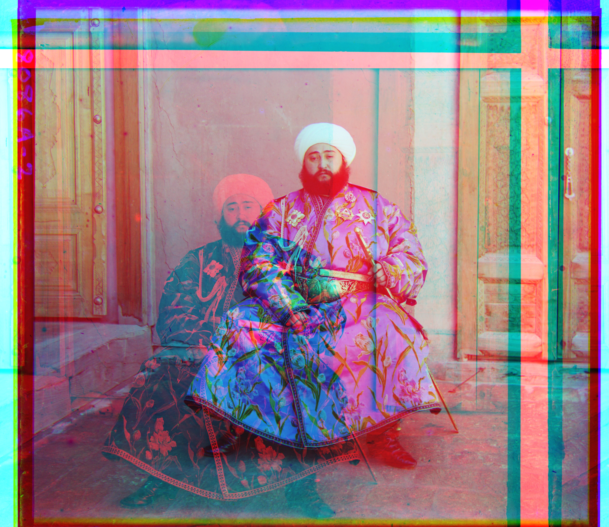
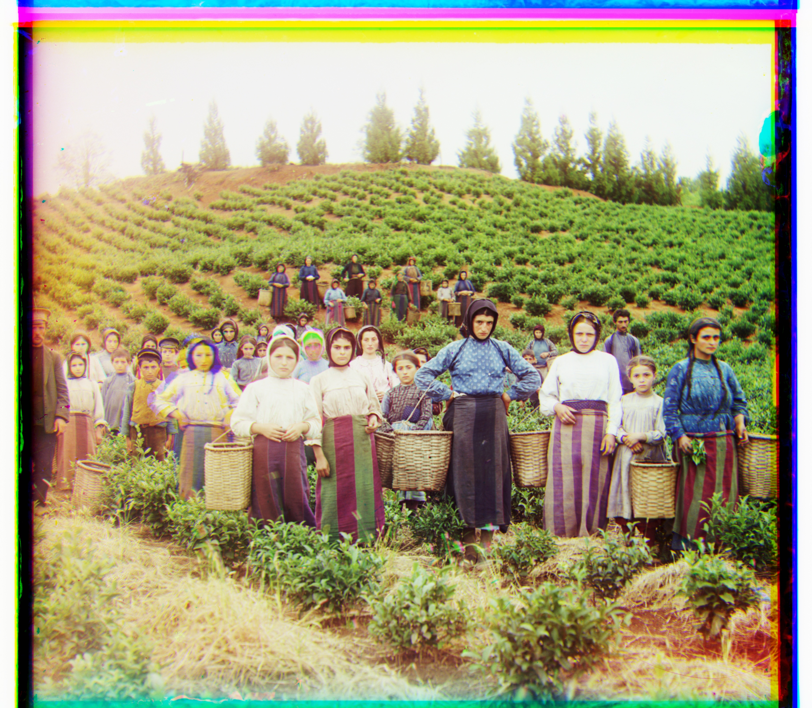
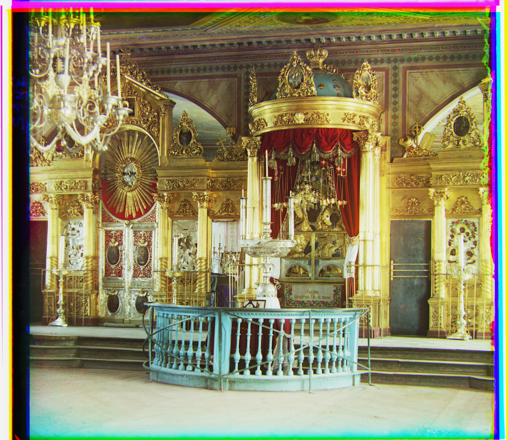
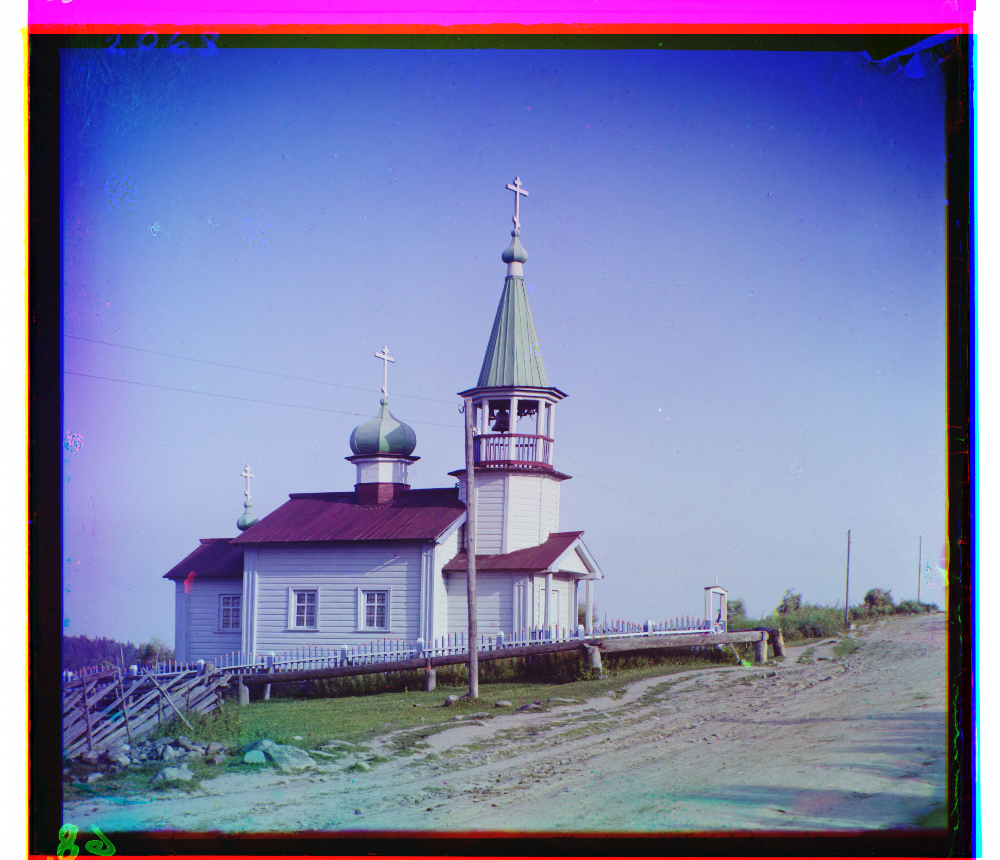
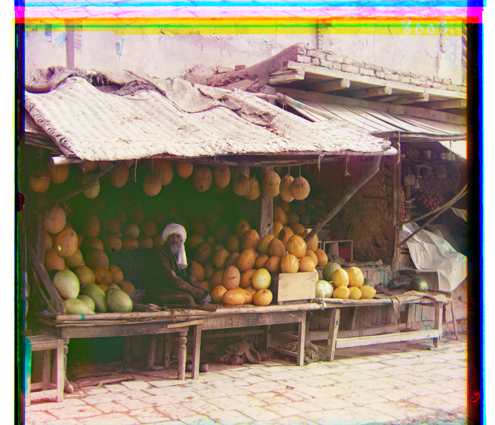
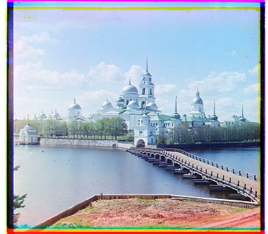
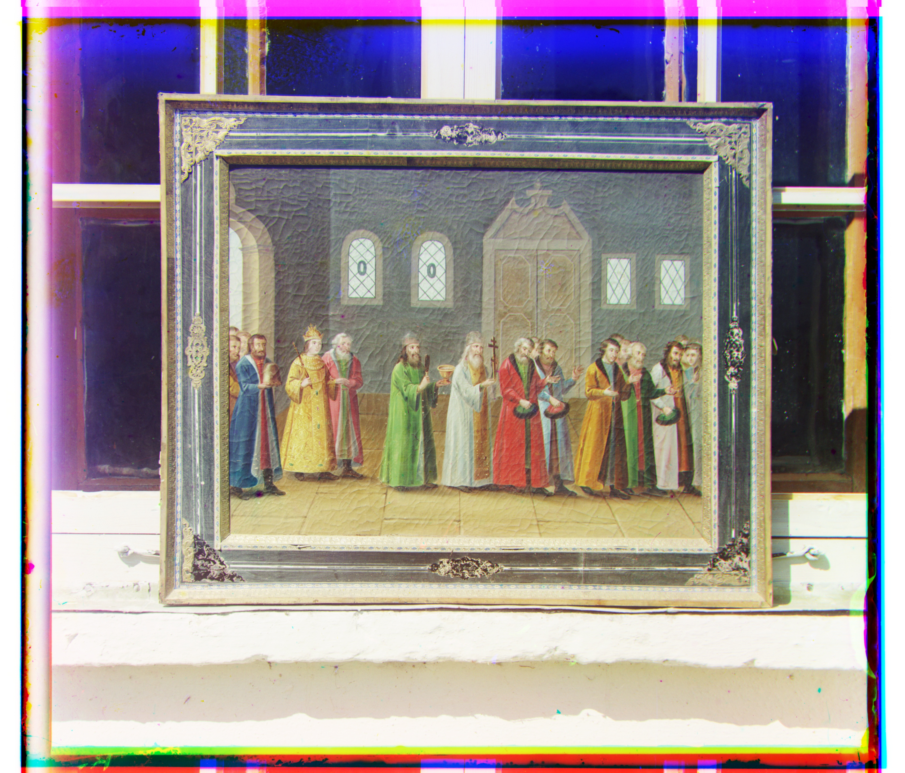
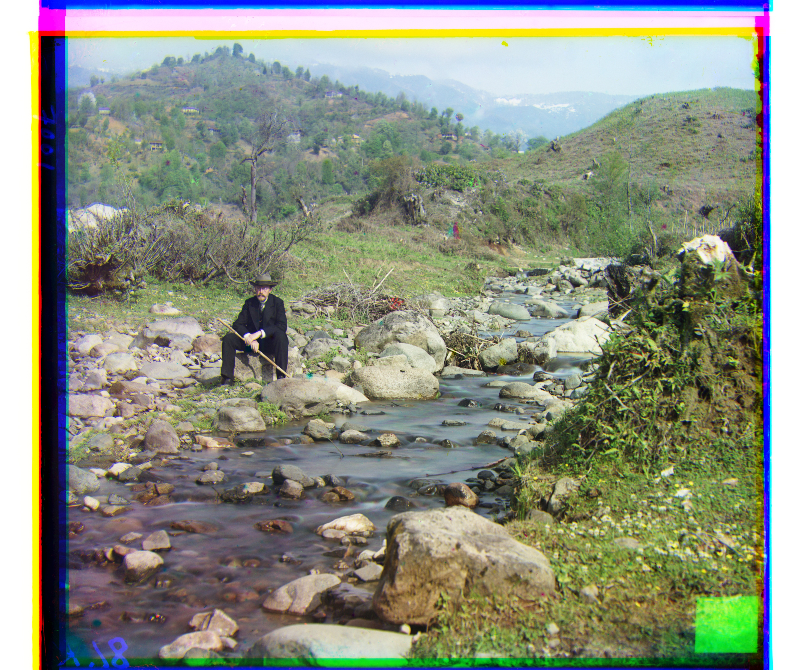
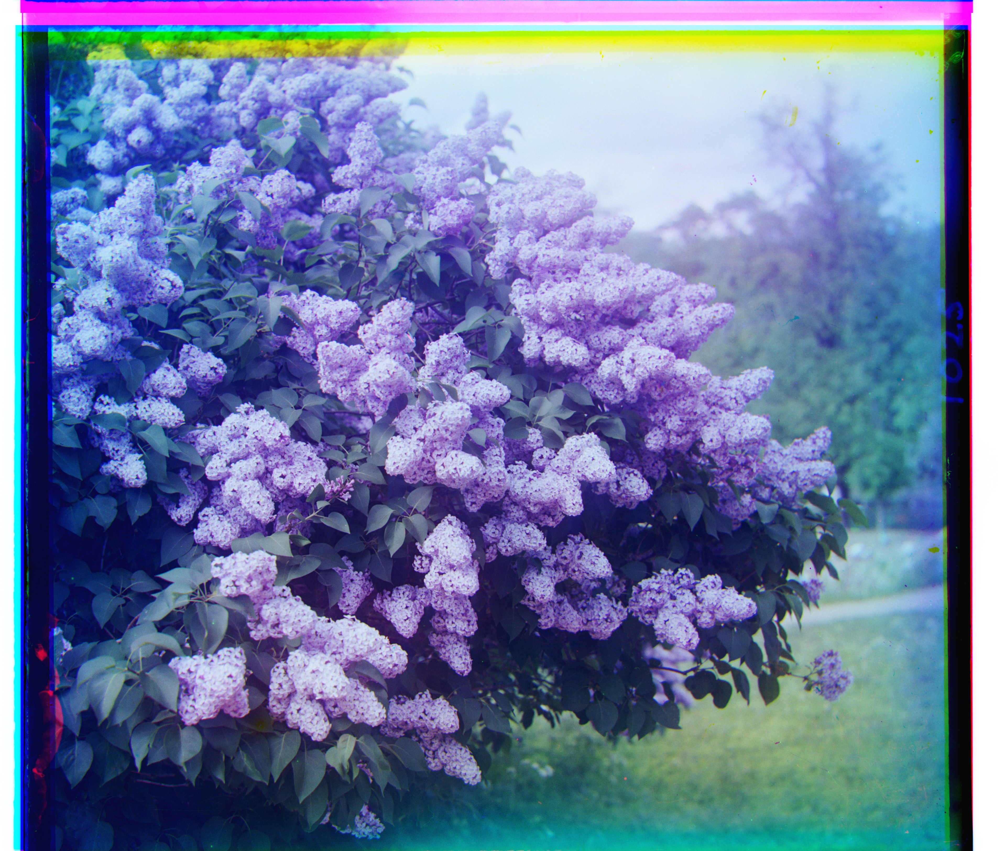
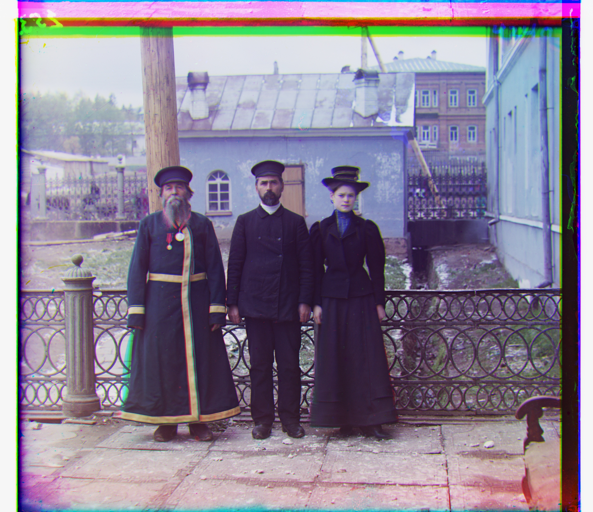


| Image | G offset (x, y) | R offset (x, y) |
|---|---|---|
| Cathedral | (2, 5) | (3, 12) |
| Church | (4, 25) | (−4, 58) |
| Emir ⚠️ | (24, 49) | (−455, 416) |
| Harvesters | (17, 60) | (13, 124) |
| Icon | (17, 41) | (23, 89) |
| Ilemselga | (7, 40) | (11, 130) |
| Melons | (11, 82) | (13, 178) |
| Monastery | (2, −3) | (2, 3) |
| Religious Painting | (3, 28) | (7, 68) |
| Self Portrait | (29, 79) | (37, 176) |
| Siren | (−6, 49) | (−25, 96) |
| Three Generations | (14, 53) | (11, 112) |
| Tobolsk | (3, 3) | (3, 6) |
| Wharf | (−7, 15) | (−16, 83) |
Additional Examples
Now we test the algorithm on some additional scans from the Prokudin-Gorskii collection.
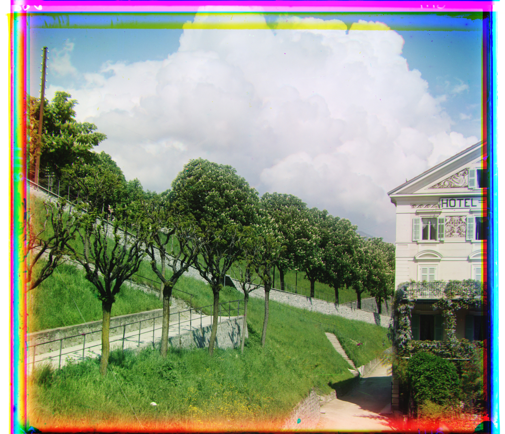
G: (13, 37), R: (38, 86)
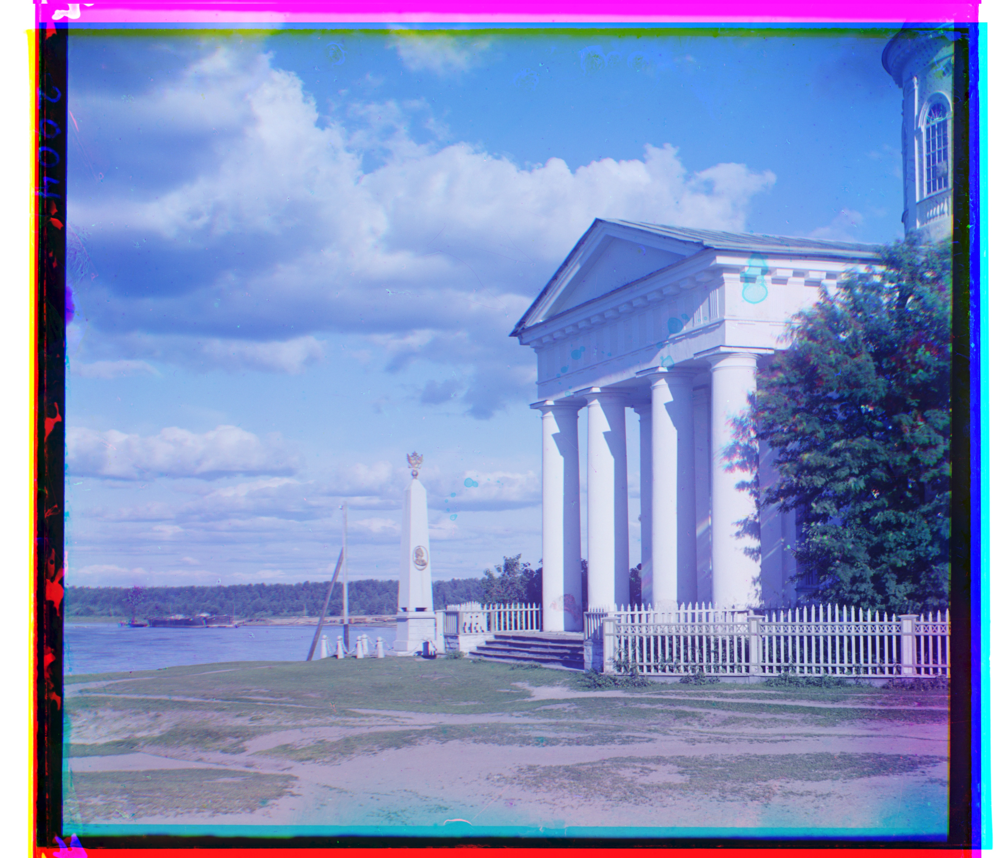
G: (27, 14), R: (50, 85)
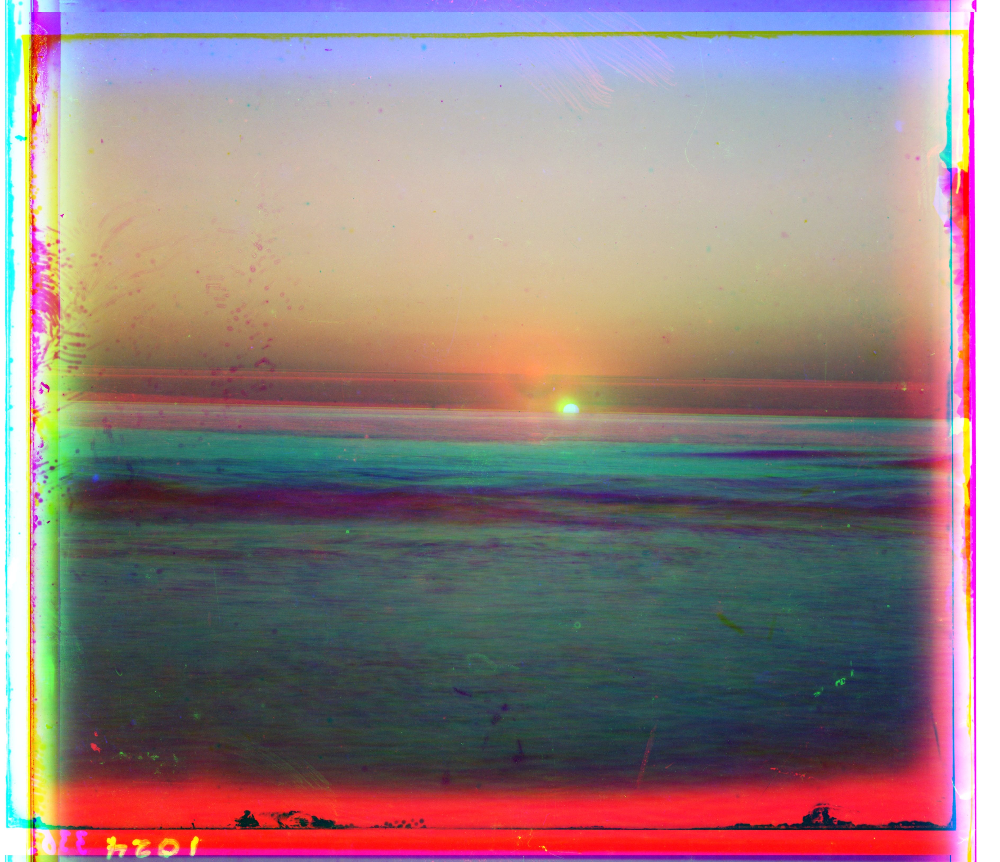
G: (10, 46), R: (−86, −25)
Takeaways
The first observation is that there was little difference between SSD and NCC for this set. This makes sense because both metrics are ultimately looking for the shift that makes two channels most similar; NCC just normalizes for differences in brightness and contrast. When the channels mainly differ by position, there is little for that normalization to correct, so the two metrics tend to agree.
One hypothesis for Emir's failure is the pyramid's narrow search at finer levels. Each level only checks a 5×5 window around the estimate from the previous level, so an inaccurate coarse estimate may be difficult to recover from later. This suggests the useful direction for future work could be to change the signal used for alignment. For example, matching image gradients or edges instead of raw pixel intensities could make the initial estimate less sensitive to brightness differences between channels while keeping the pyramid efficient.